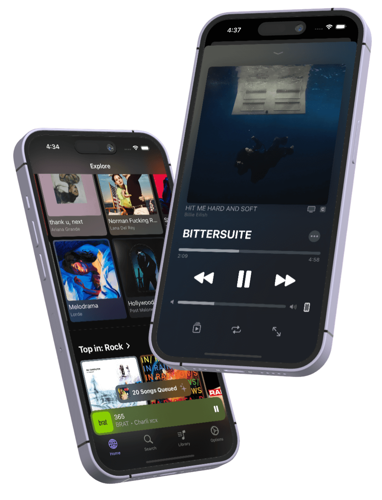
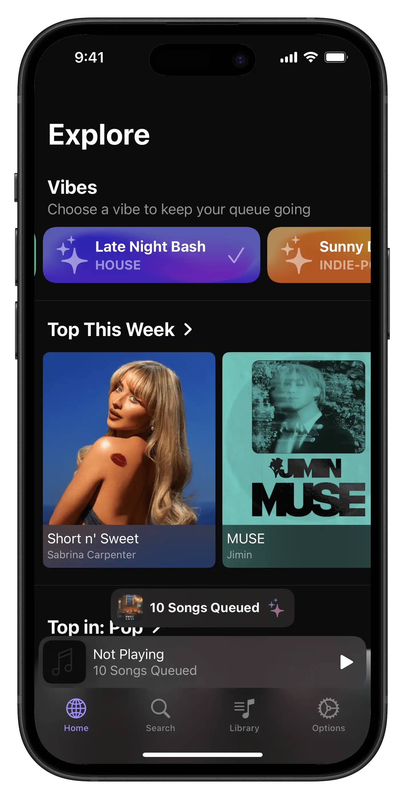
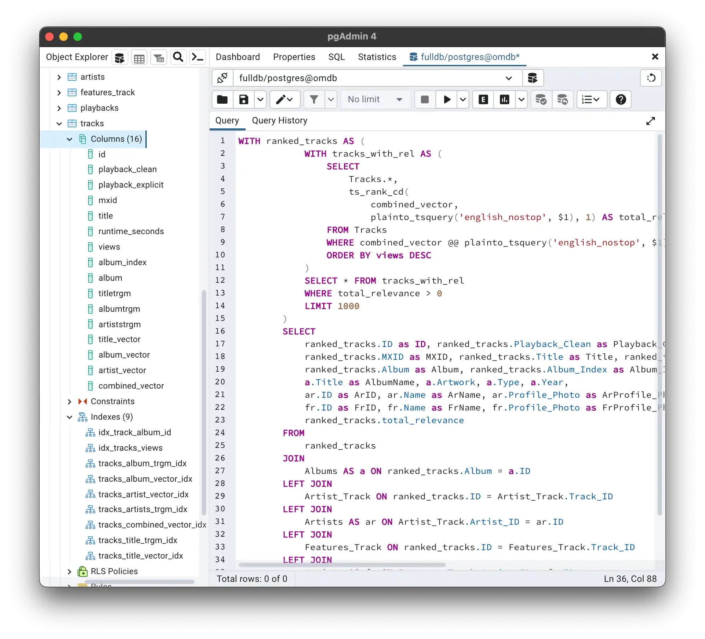
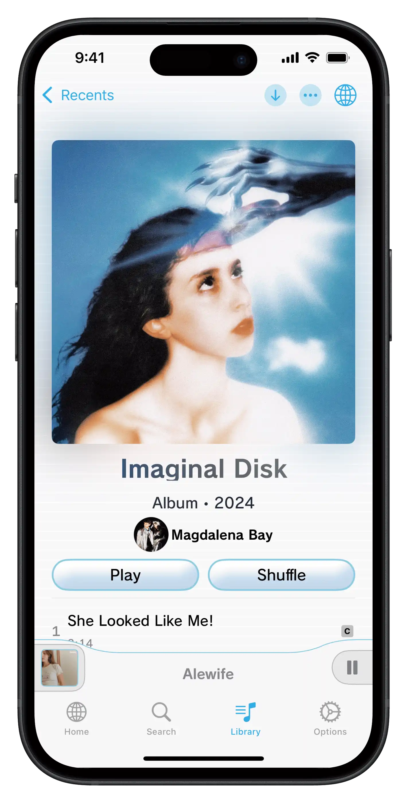
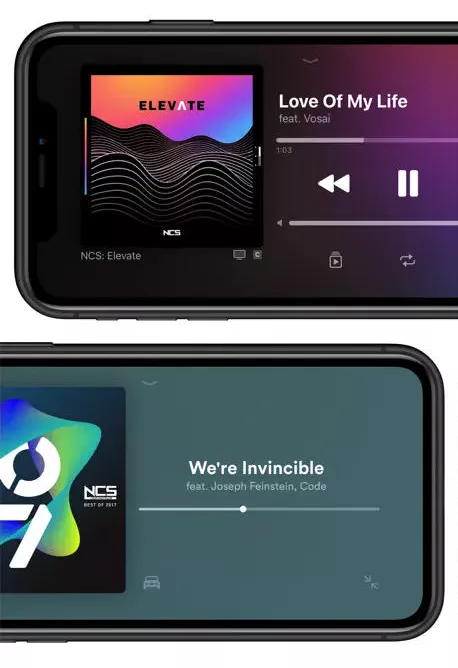
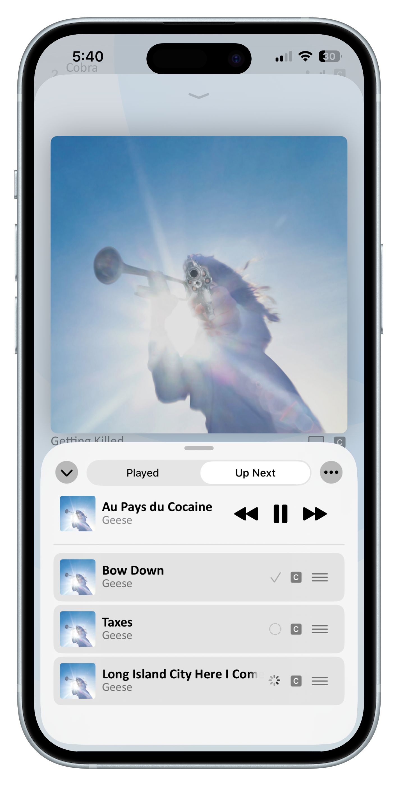
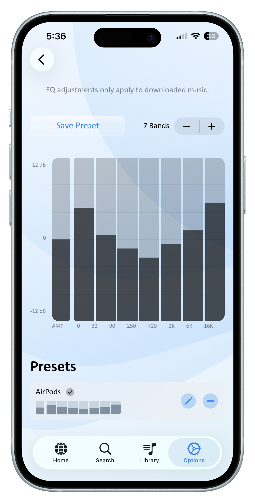
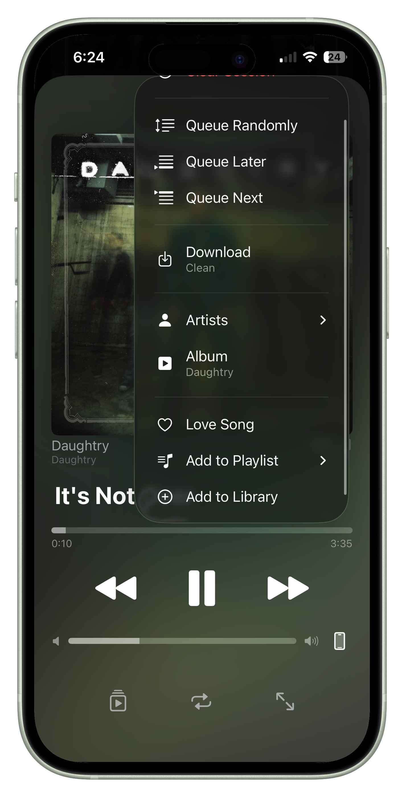
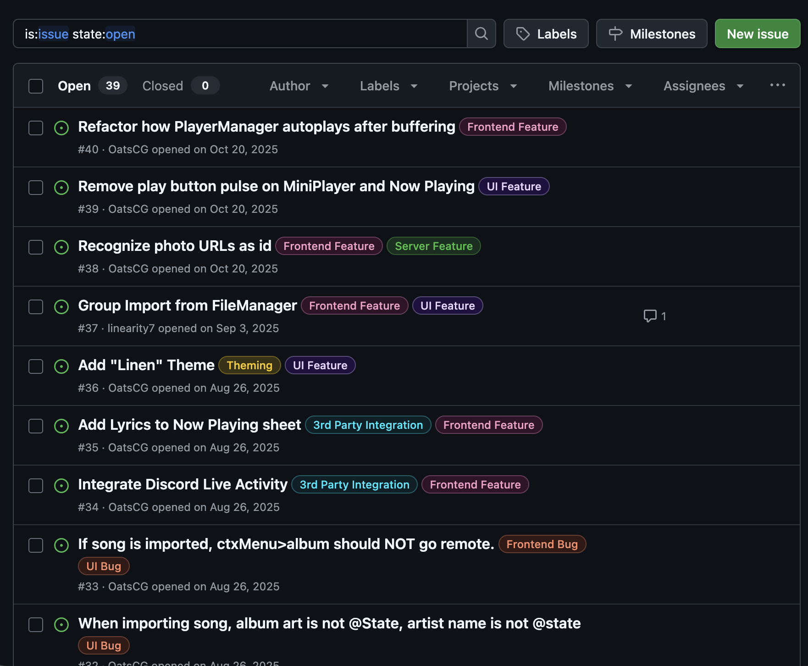

01
What is Openmusic?
Openmusic lets you stream music from custom, community-made servers. This includes my own public server which serves 160+ million songs, the largest database of its kind.
The app is built in SwiftUI, and includes a suite of features comparable to bigger platforms, incluing AI-suggested queuing, multiple UI themes, importing playlists from other platforms, and skipping songs with the wave of your hand.
The goal of Openmusic was to compete with Spotify; same music, more features, no ads.

02
Aggregating Music and the OMDB
A python script scrapes YouTube Music, and aggregates as the Openmusic Database (OMDB) which the app serves.
A number of innovations make this possible, including combining releases (the "Other Versions" section on
YouTube Music) into a single album,
and merging identical tracks with separate clean/explicit "playbacks".
Another innovation is modifying the album's YouTube Music page URL to a regular YouTube URL, exposing the
raw audios instead of
music videos.
This is what many "free music" apps get wrong; playing the music videos instead of the song.
The script runs in 4 days. The database is published publicly as the OMDB, making it the largest public music database (4x larger than its competition, MusicBrainz).


03
Design and Themes
SwiftUI makes it easy to iterate on designs, so Openmusic uses modular components in a ThemeManager providing 6 different themes. These themes emulate the look and layout of popular apps like Spotify, specific aestetics like Frutiger Aero, and my personal favourite, the Nintendo Wii menu!
I designed the themes to test my own limits of creativity, and ability in copying designs. Such a task is difficult when the goal is a streamlined user experience, but my skills and experience allowed me to execute bold looks without impeding the experience.


04
The PlayerManager
A master PlayerManager class manages queuing and priming songs. The PlayerManager automatically prepares songs for playback, initializes the EQ, and times crossfading for local and remote files.
The PlayerManager utilizes AVFoundation for playback, and also manages subclasses for additional features, including the FetchSuggestionsModel for AI-suggested queuing. The Spotify and Apple Music APIs fetch music suggestions, which are converted to Openmusic files. User-selected "Vibes" support music suggestions by providing attributes like energy and acousticness.


05
Additional Controls
Openmusic lets you import/convert playlists from Spotify or Apple Music. You can also control music by waving your hand in Car Mode, or with the volume buttons in your pocket. Car Mode uses the TrueDepth sensor's depth buffer to read gestures in real time. Volume buttons are hooked for 'Volume Skip' controls, letting you skip songs from your pocket even when your phone is off.
Swift Testing and GitHub issue tracking helped manage these features, resulting in years of consistent feature updates.
